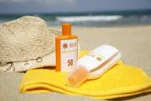

Welcome to **SunShield Sunscreen**, where skincare meets protection, confidence, and healthy living. Our mission is simple — to help everyone enjoy the sun safely without compromising their skin health. We believe sunscreen is not just a beauty product; it is an essential part of daily skincare that protects the skin from harmful ultraviolet (UV) rays, pollution, tanning, premature aging, and sun damage. At SunShield, we are committed to creating high-quality sunscreen products that are effective, lightweight, comfortable, and suitable for all skin types. Founded with the vision of making sun protection simple and accessible, SunShield focuses on combining science and skincare innovation. Many people avoid sunscreen because of greasy texture, white cast, stickiness, or skin irritation. Our products are specially designed to solve these common problems by providing a smooth, non-sticky formula that blends easily into the skin. Whether you are a student, office worker, athlete, traveler, or someone who spends time outdoors, SunShield helps keep your skin protected throughout the day. Our sunscreen products are enriched with skin-friendly ingredients that nourish and hydrate the skin while protecting it from harmful UVA and UVB rays. UVA rays can cause premature aging, wrinkles, and dark spots, while UVB rays are responsible for sunburn and skin damage. SunShield uses advanced broad-spectrum protection technology to guard your skin against both. Our formulas are dermatologically tested and made with ingredients that are gentle on the skin, making them suitable for dry, oily, combination, and sensitive skin types. At SunShield, we also care deeply about skincare education. Many people think sunscreen is needed only during summer or at the beach, but experts recommend using sunscreen every day, even indoors or during cloudy weather. UV rays can still penetrate through clouds and windows, causing long-term skin damage. Regular use of sunscreen helps maintain even skin tone, reduces tanning, prevents early signs of aging, and lowers the risk of sun-related skin problems. Our goal is to encourage healthy skincare habits and help people understand the importance of daily sun protection. Quality and customer satisfaction are at the heart of everything we do. Every SunShield product goes through strict quality checks to ensure safety, effectiveness, and comfort. We continuously research modern skincare trends and customer needs to improve our products and provide the best possible experience. We are proud to create products that not only protect the skin but also boost confidence and comfort in everyday life. Sustainability and responsibility are also important to our brand. We believe skincare should care for both people and the environment. That is why we aim to use safe ingredients, eco-friendly packaging, and cruelty-free testing methods whenever possible. We are dedicated to building a brand that customers can trust for quality, honesty, and long-term skin health. SunShield is more than just sunscreen — it is a commitment to healthier skin and a brighter future. Whether you are enjoying a sunny day outdoors, traveling with friends, working under the sun, or simply going about your daily routine, SunShield stands beside you as your trusted skincare partner. Protect your skin, stay confident, and shine safely with SunShield Sunscreen.
